TOOLS#
Dropbox#
Github#
Github is a version control system. To get started, all you need to do is get a free account on their website Github. You can also get a free account upgrade by requesting an upgrade as a student or researcher using your edu email. Here are some online resources to help you get started. Please let us know if you find more/better ones.
Open Science MOOC - Module 5: Open Research Software and Open Source
Programming Historian Lesson: Getting Started with GitHub Desktop
Introduction - please read it#
To access the most updated version of this introductory material, please click here. In “GitHub: a Practical Introduction” I attempted to follow each explanation of Github’s workflow and commands with an example on how to use them. If you want to follow the example and practice the commands, please email me at michaelbest@gmail.com so I can grant you “collaborator access” to the GitHub repository for this introduction. You will need it to perform some of the commands. In the following sections, I will guide you through (i) editing an existing project in Git and (ii) creating a project of your own and transferring it to Git. Although the examples are very simple, the commands are the same that you’ll be using in more complex projects.
GitHub Basics#
Distributed Version Control System#
As you probably know, GitHub is a Version Control System (VCS) – it stores in repositories (often called repos) all the versions from your project that you saved, so you don’t lose your project’s history. However, a key feature of GitHub that differentiates it from older VCSs is that it is a Distributed VCS. This means that GitHub not only stores a version of your project on its cloud service (called remote repo) but also every user from a project stores the entire history of the project on their computers. So besides storing the current version of the project that you are working on (called the working directory), you also store a Git repository on your computer with the project’s history (called the local repo). This allows GitHub to work (i) incredibly fast, since it doesn’t have to access the internet to access a project’s history; (ii) independently from your internet connection, for the same reason, and (iii) very safely, since every user serves essentially as a backup of the project’s history. This also explains why most users keep their code in a GitHub folder and their data on a storage system (e.g. Dropbox)–it would be too costly to save multiple versions of your datasets to your computer.
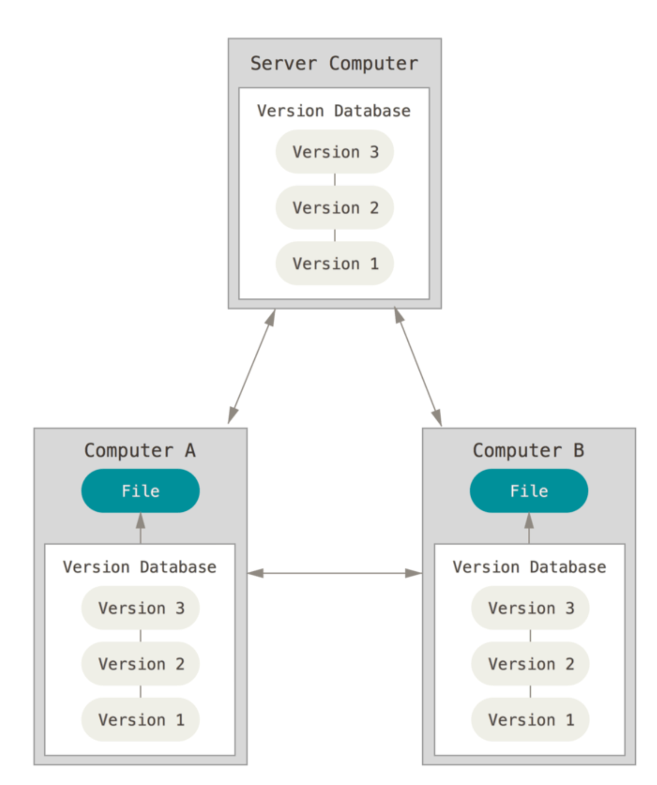
In Figure above, the Version Database is what we call the “remote repo.” The Files in Computer A and in Computer B are the “working directories,” and the Version Database in each computer is the “local repos.” Local repos, or .git repos, are by default hidden on your computer, so you’ll only see your working directory. From this point onward, we will see how to create local and remote repos to store your project’s history.
Git Setup#
Install the program. You can find very simple instructions here.
Create an account on GitHub.
(Optional) set up your identity. Go to your terminal and type the following commands:
$ git config --global user.name "John Doe" $ git config --global user.email johndoe@example.com
Don’t actually copy the $ symbol, this is standard notation to let you know this command should be run in the terminal. If you need any help to understand a command, you can type the git help <verb>. For instance:
$ git help config
Most of this section’s content was a summary from Pro Git - Everything You Need to Know About Git, one should read it for a more detailed understanding.
Joining a Project: Cloning an Existing Repo#
This section guides you through an example on how to join an existing project, probably that your co-author or Professor already began. This will be useful to introduce some concepts and Git commands. It will also be all that RAs will need to know 90% of the times.
Clone a repo#
To clone a repository means that you are reaching out to a remote repository and copying nearly all data that the server has into a new local repo in your computer. Let’s illustrate this with an example:
Access the URL of the remote repo.
Open terminal
Go to the directory where you want your repo to be:
$ cd /Users/username/documents
Go to the remote repo click on clone or download and copy that link displayed.
Then, on your terminal, clone the repository with git clone
$ git clone "https://github.com/luigicaloi/GitShortIntro.git"
This will create a GitShortIntro directory with a working copy of the latest version of the project. It also stores a .git directory (the local repo) inside it, which is hidden. For more info, see this.
Modifying Files#
If you open the new GitShortIntro directory, you’ll see that there are only two files AllRead- ers.tex and Test.do and one folder “GitHub_a_Practical_Introduction”. Your task is sim- ple: open the “AllReaders.tex” file and include your name at the end of the list of all readers. Now that you have made changes to the working directory, let’s see what is your status in Git. Change the directory in the terminal for the one from your new project. For instance:
$ cd "/Users/username/documents/GitShortIntro "
$ git status
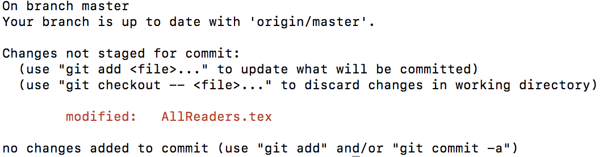
Don’t worry about the branch message yet, we’ll see what that is in section 10.5.1Git Branching. GitHub realizes that your local repo is different from your working directory, it realized that you made changes to the “AllReaders.tex” file and shows it under “Changes to be committed.” Our first goal is to make sure that your local repo also saves those changes (we’ll take care of the remote repo in the next section). You first need to tell GitHub what documents you want to save the changes in the local repo with the following command:
$ git add "AllReaders.tex"
Now run git status again and you’ll see: 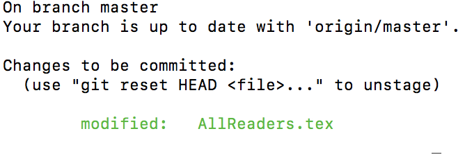
Committing Modified Files#
AllReaders.tex is now under the “Changes to be committed.” This basically means you told GitHub you want to save the changes made to it. Next, we need to “commit” those changes. Committing is telling GitHub to take a snapshot of your project in the working directory and save it to your local repository. In other words, you are saving your latest changes to the git repo. See here for more details. The command to commit changes is:
git commit −m "A message explaining your changes to the project "
Unmodifying a Modified File#
If you accidentally modified a file, or regretted the changes, and wants to revert it back to how it was when you last committed (the local repo’s last snapshot), you can run the following command:
$git checkout − <file >
However, be careful, the changes you had made and not committed will be completely deleted.
Pushing to Your Remotes#
So you have already (i) cloned all the data from the remote repo and created a local repo; (ii) mod- ified your working directory (e.g. your code) and (iii) added and committed your changes from your working directory to your local repo (the .git repository). We’ll now update your changes to the remote repo. This can be done with the following command:
$git push origin master Or more generally
$git push <remote> <branch>
“origin” is the automatic name that GitHub assigns to the remote repository. “master” is the branch in the remote repo, but don’t worry about it yet, it will make sense after we see 10.5.1 Git Branching. Git push uploads the changes from your local repo to your remote repo. Now your working directory, your local repo and your remote repo are all on the same stage.
Creating a Repo#
Creating an Empty Repo#
In the last section we saw how to clone a repo, make changes to your local repo and push it back to the remote. In this section we will simply see how to create an empty remote repo, then you can follow the workflow from Section 3 to add your files to it.
Go to GitHub’s website and login
On any page, click the + button on the upper right part of the screen and then click on “New repository.”
Choose the name of your repo and click Create repository. For more options, see this.
Adding an Existing Project to Your New Repo#
To add an existing project to the new remote repo, we will first create a local repo, add the existing project to it, commit the changes and push it to the empty remote repo.
Change the current working directory to the desired local’s project dir.
$cd /Users/username/newrepo
Initialize a local git repository in your current directory. $git init
Add the files for your new repo.
Commit the new files, which creates a snapshot of how they are now and save it to the local repo
Go back to your remote repo on GitHub’s website and copy the remote repository URL.
: Add the new remote repo from your terminal $git remote add origin
Your local repo is now connected to your remote repo. Push your changes to your remote repo as we saw in Pushing to Your Remotes. For more details and options, see this.
Branching and Merging#
In this section we will see the two concepts that are most important for collaborative work – branching and merging.
Git Branching#
The easiest way to understand branches is to think about the repo as a series of commits. When you create a repo, GitHub automatically creates a branch called master. This branch is simply a pointer to the last commit of your project. In figure bellow, for instance, the master branch is pointing to the third and last commit (C2). 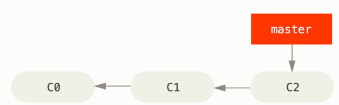 Now let’s say that you need to make changes to your project for a new submission, but you don’t want to change the original code yet. You can create a new branch, called testing, with the following command $git branch testing
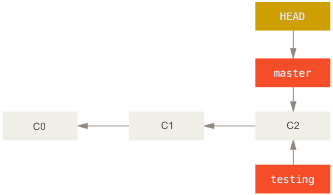 Now the two branches are pointing to the last commit (see figure 53 above). The HEAD pointer shows which branch you are currently working in your local repo. The following command switches control to the testing branch so that you can make the new changes to your project.
$git checkout testing
Now if you make changes to your project and commit them, your project history will look like Figure 64. Note that the master branch is still pointing to commit C2. The good thing is that if we decide that the new ideas were bad, we can simply go back to the master branch with
$git checkout master
With this, all the files on your working directory go back to how they were when you made the last push in your master branch (C2). 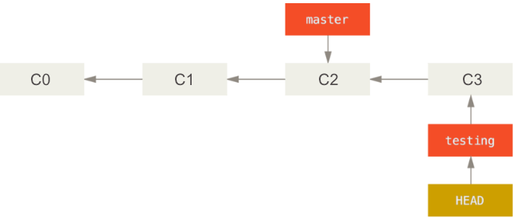 Another scenario that illustrates why it is good to make new changes in new branches is when a journal asks you to make a change some details to a paper in which you have been making drastic changes to. You can easily go back to your ‘master’ version (assuming this is the one you submitted to the journal), make changes to it, and then go back to your ’testing’ branch to continue working on the big changes.
Git Merging#
Following from last subsection’s example, let’s suppose that while you made changes to the ‘test- ing’ branch, someone else had to make urgent changes to the master branch. For that, this person created a ‘hotfix’ branch. The history of your project now looks like this 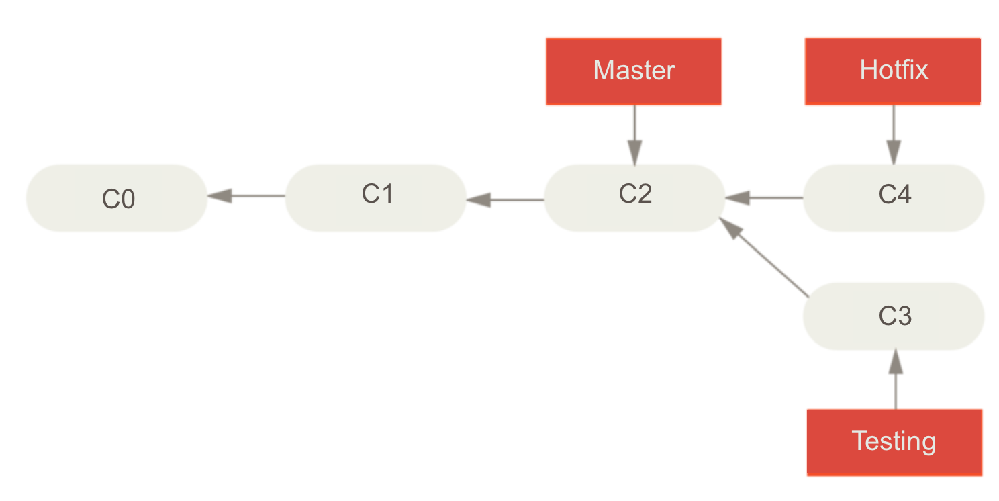 Now let’s say we finished the changes in the hotfix branch and we are ready to merge the master branch with the hotfix branch. This can be done with the following command:
$git checkout master
$git merge hotfix
And we would see the following message: 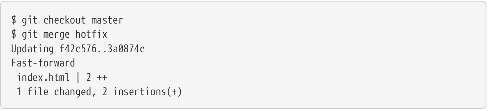 Because we didn’t make any changes to the master branch and C4 from the hotfix branch was directly ahead of C2, GitHub can simply “fast-forward” the master branch and change the pointer from C2 to C4. Since the hotfix branch and the master branch now point to the same commit, we can delete the hotfix branch:
$git branch −d hotfix
Merging conflicts#
Things are a bit more complicated when you are trying to merge two branches that are not directly related. For instance, if some changes made in the hotfix branch are in conflict with changes made in the testing branch, GitHub won’t be able to complete the merge and will ask your help to decide which version it should keep for that specific change. The first step would be to try merging both branches.
$git merge testing
We would then check in which files there was a merge conflict with git status
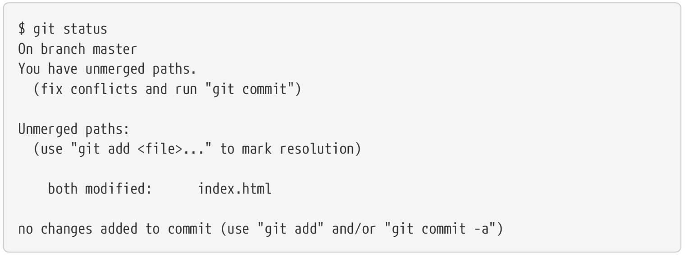
Any file with a merge conflict would be under ‘unmerged paths’. To solve the conflicts, we first need to open the files in a text editor. GitHub adds conflict resolution markers in it so that we can solve the conflict manually. For instance, in the ‘index.html’ file from the example above, the section of the file that must be solved looks like this
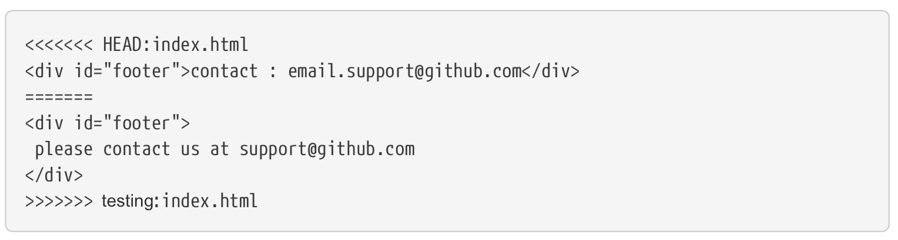
The changes made to the master branch are under <<<<<<<< HEAD:index.html and above the ======= lines, because HEAD was pointing to the master branch (i.e. the user was in the master branch). Everything bellow <div id=“footer”> and above >>>>>>> testing:index.html was in the testing branch. You can manually solve this issue by keeping the version you prefer, or a combination of both. Of course, delete the conflict signals from GitHub.
For instance, one way to solve this issue would be to substitute the entire block with this
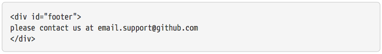
Once you’re done solving the conflicts, the next step would be to let Git know these files are solved by running git add in the terminal.
$ git add document
You can then commit your changes and finish merging the two branches. When merging branches that are not directly linked, instead of just moving the branch pointer forward, GitHub will create a new commit that includes the changes in hotfix and testing. Your new commit history will look like this:
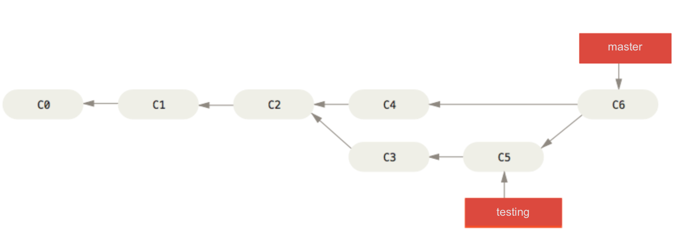
Branching and merging allow us to understand better what was going on with the push command in Pushing to Your Remotes. We saw how to push a local repository to a remote one with the command git push
Git Workflow#
There are several types of workflow in Git, many of which we indirectly covered in the previous sections. Here I’ll focus on the (i) Centralized Workflow and (ii) Feature Branch Workflow, but for a bigger variety of workflows and more details please read Getting Git Right’s tutorial, Comparing workflows.
Centralized Workflow#
The centralized workflow is the simplest and the easiest to transition for who’s been using Drop- Box. The idea is quite simple: the entire project has only one branch, the master branch, which all changes are committed into. This branch serves as central repository and you “push” your changes similarly to when you want sync your code to the DropBox folder. 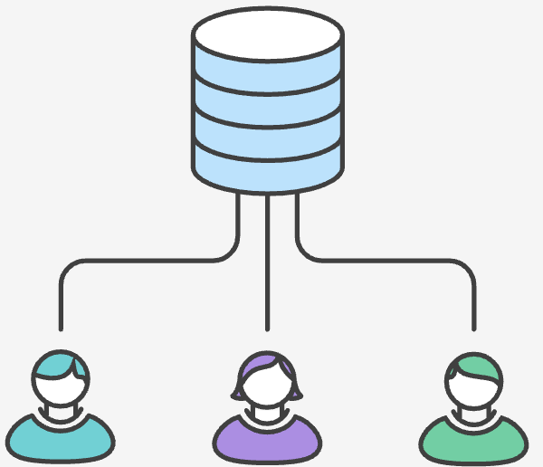 Despite its simplicity, the centralized workflow with Git already offers some advantages com- pared to other repository systems:
Independence: it allows each developer/researcher to work independently on the same project. E.g. you can work in the same .do file (or other code) as another colleague with- out worrying if DropBox will mess up the changes made by both of you.
Controlwhilemerging:mergingtworesearcher’sworkismucheasier,becauseGitprovides a useful merge conflict functionality that allows one to see what parts of the code of each researcher need to be fixed in a merge.
Control in updating: it allows one to control when he/she wants to share the changes in his/her code. I.e. while a code that is stored in DropBox is constantly being synced and up- dated to everyone, in Git you gain more control by making edits to the code in your computer (local repo) and deciding when to push the changes to the remote repo.
Safety: it gives every developer their own local copy of the entire project’s history.
Feature Branch Workflow#
In short, the Feature Branch Workflow requires an “official” branch (usually the master branch) to store all stable and accepted code, while the development of new features to the code should take place in dedicated separate branches. In Git Branching we already illustrated the feature branch workflow. If you recall, we mentioned that you could (i) create a testing branch to create new features to your code while keeping your main code intact or (ii) create a hotfix branch. The examples in that section illustrate the benefits of the Feature Branch Workflow:
Collaboration: It makes it easy for multiple researchers to work on a particular feature while keeping the main codebase intact. While the Centralized Workflow allows more control com- pared to DropBox– a researcher can choose when to “push” changes to the master branch–the “feature branches” allow multiple users to collaborate before making the changes official in the master branch.
Stability: By definition it guarantees that the master branch always have official and bug- free code. After all, you should merge your “feature” branch to the master branch once the feature became official and stable.
Organization of progress: Since all new code features are developed in separate branches and only the accepted stable codes are merged to the master branch, the master branch pro- vide an offician history of the project development. As mentioned in the beginning of this section, most of the content was taken from Getting Git Right’s tutorial Comparing Workflows, please read if you want more details. Alternative: If creating a new branch whenever you will create a new feature seems a bit cumbersome, a simpler alternative is to create branches for each one of the project collaborators. In this strategy, the branch “John” will reflect the work John is doing. If Sophia wants to help him she can easily access John’s code state by switching to John’s branch.
Github Desktop#
Github is a great version control system, but the default way of interacting with it is through the command line. This may look cool, but it’s pretty tedious, and it requires remembering a lot of syntax. For all but the most intricate tasks, I prefer using a graphical user interface. There are many options (e.g. SourceTree or the others [here] (https://git-scm.com/downloads/guis)) but I have settled on GitHub Desktop since it’s developed by the same people who make GitHub, and since it has a pretty purple cat logo. You can download it free from their website https://desktop.github.com/. They also have some pretty nice tutorials to help you learn how to do the basic operations: https://help.github.com/desktop/guides/. In particular, you’ll need to know how to
Fancier commands seen in the previous section, such as branches, creating pull requests, and merg- ing branches can also be done through the GitHub Desktop, but it might be easier to follow the terminal section. Despite whether you prefer the convenience of Github Desktop or the techy/quick terminal commands better, there is one feature from GitHub Desktop that most people prefer: visualizing what changed in a new push. Once you have your GitHub Desktop set up, click on pull origin to make sure that your GitHub Desktop is up to date with the remote repo and, under your current repository, click on “history.” 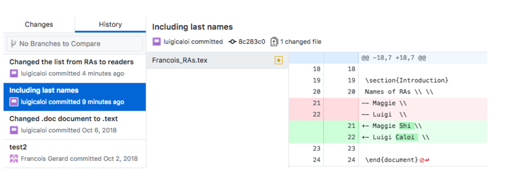 This is a list of the commits to that repository to the master branch on the GitShortIntro remote repository. You can click in one of the commits to see what changes were made. In red are the deleted lines and in green that ones that were added.
Some final Git tips#
The biggest advantage of GitHub is to help a group of multiple people to coordinate their work in one single code. A few notes are worth making:
It is a good practice to push/pull your changes to the remote repo at least weekly to make sure you have the latest updates of your branch.
Try to divide your ‘commits’ into small changes to make them accessible. E.g. in 11 GitHub Desktop’s picture it was easy to understand what changed in the latest commit–last names were added to the list of names–but it would be hard to understand what happened if multi- ple changes to multiple codes had been made. If you are commiting multiple thing at once, it is recommended to summarize your changes in 50 characters and then write a more detailed explanation, separated by a line.
Keep your GitHub folder outside of DropBox–it can get confusing if your code is getting updated by DropBox or by the pull/push from GitHub.
If you use the Feature Branch Workflow, aim for short-lived branches. The longer a branch lives, the higher the chances of confusing merge conflicts when merging it to the master branch.
VeraCrypt#
VeraCrypt is an open source drive encryption tool. Often, our projects work with confidential data containing personally identifying information (PII). When this is the case we have to be extremely careful to protect the identities of the individuals in the data. To do this, we usually pseudonymize the data (replace identifying information with pseudonyms) and then make a dictionary file that allows us to deanonymize the data if necessary. Any data that we have that contains the personal identifiers needs to be carefully encrypted. To do this, we use VeraCrypt.
You can download the tool here: https://www.veracrypt.fr/en/Home.html. JPAL has written a useful guide to how to use it: https://www.povertyactionlab.org/sites/default/files/A guide- to-VeraCrypt-Installation-and-Demo_Sep-2016.pdf and, even better, a stata module that can inter- act with it directly: J-PAL/VeraCrypt (or type ssc install veracrypt in stata)
Trello#
Trello is an intutive tool to organize teamwork, so you should have no problem to start using straight away. Nonetheless, this short and practical tutorial can be a useful resource. It is also important to note that our team follows a pattern for our Trello boards, illustrated in this sample board.
Latex#
LyX#
Improved Text Editors#
Atom#
Sublime#
Sublime is a text editor that will facilitate coding, especially for Stata users. After downloading it, you should download the Package Control package. This will allow you to easily install other packages by pressing command shif P and then searching for “Package Control: Install Packages,” please see more [here(https://packagecontrol.io/docs/usage)]. There are a few packages that will enhance the usability of Sublime, getting to know them will speed up a lot of the coding in Stata:
Package Control: package manager. This should be the first package you install.
Alignment: Helps for quick alignment of lines according to a character, e.g., aligns multiple lines according to
=.BracketHighlighter: Helps to identify matching brackets.
Git: Allows for GitHub usage within sublime, i.e., you can commit your changes without leaving your .do file.
Insert Nums: Allows for inserting multiple numbers in multiple selections. For instance, let’s say you want to replace
name = "name" if _n = "number"for multiple numbers. This package will make things much easier. Please see as well the notes on multiple selection within Sublime below.LaTeXing: Assists for latex users within Sublime, but until now I am still using other text editors for LaTex such as LyX and overleaf.
Material Theme: If you enjoy exploring new themes for the your code, this package has my favorite ones.
SideBarEnhancements: Provides some improvements to Sublime’s sidebar.
Stata Enhanced: Basic support for Stata, including .do and .ado files.
Stata Improved Editor: Allows for some handy shortcuts or commands for Stata. For instance, if you select a section of your code and press CTRL d it will execute (do) that section in Stata for you.
Sublimerge 3: Helps to compare files and directories.
TrailingSpaces: Automatically deletes the trailing spaces at the end of lines. While this is not always super useful, it can be when using sublimerge to compare files (e.g., Sublimerge would tell you two lines are different if one has trailing spaces and the other doesn’t).
zzz A File Icon zzz: Purely visual add-on. It adds file-specific icons to Sublime Text.
Sublime can be pretty good with shortcuts. The most useful for me from the list are Command J to transform multiple lines into a single one and the “split window” command. On a similar note, Sublime allows for column selection, which can be particularly useful for selecting and writing at multiple lines.
STATA#
Large datasets: Gtools, Ftools and reghdfe#
If you are working with large datasets, the Gtools and Ftools are community-contributed packages that perform common Stata commands much quicker, such as collapse, reshape, merge egen and more. Gtools is generally even quicker than the Ftools, so if the same command is availble on both packages I usually go with the Gtools option.
reghdfe is a generalization of areg/xtreg, but it supports many levels of fixed effects, it is faster with large datasets and contains other benefits detailed in their website.
Exporting from Stata to LaTex: estout, texsave, regsave, file#
When generating LaTex files, it will save you a lot of time if the output of your Stata .do files are synced to your .tex files. For instance, let’s say you are writing the first draft of a paper, if your .do file generates all the tables, plots and even summary statistics, your .tex file can simply import them. Then if you change your data or your code, you can simply rerun your .do and .tex files to update your tables, plots and statistics for your second draft.
Exporting regression tables: perhaps the most used command to export regression tables is estout, please see how to use it here. Nonetheless, sometimes it is useful to save the coefficients of the regression to a dta file. This can be done with regsave, or postfile. While postfile uses a tempfile and gives you more freedom on which coefficients to save, regsave can be more convenient.
Exporting summary statistic tables: There are multiple ways to do this, including using the already mentioned postfile. However, I mostly use texsave, which outputs the dataset currently in memory to a file in LaTeX format. This is useful when you used collapse and your summary statistic table is right on Stata already.
Exporting a single summary statistic: Let’s say that in your paper you refer to the result of a regression multiple times. In this case, it might be useful to “synch” that statistic–the result of your important regression–with your .tex file, otherwise you’ll have to manually edit the .tex file every time. Please see the “Simple statistic” section of this [link] (https://www.nickeubank.com/exporting-results-stata-latex/).
Organization#
We already mentioned the organization among files in section 4 “Folder Organization,” but Stata .do files should also be organized within them. Here are a few tips:
Readability: your code should be well documented, with comments along the way, and ideally with a short description at the beginning of the code and notes on important features or what still must be done.
Replicability: your code should run successfully independent of the computer it is running on. Usually this can be done by setting the common directory (e.g. DropBox or GitHub directory) at the top of the .do file, but you should be also attentive to other matters, such as whether any packages must be installed by the other users, Stata older versions, etc. It might also be useful to write globals at the beginning of the code that allows the user to decide what section of the code she wants to run.
You can follow the following code header as a guide: 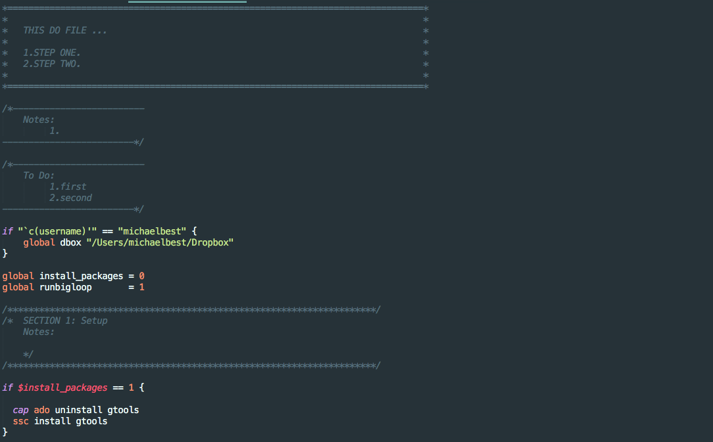
R#
R Studio#
Where to begin#
While finding documentation online for specific commands from R can be done quickly online, it might be harder to find a comprehensive introductory material to it. DataCamp contains the best introductory material. The “Data Scientist with R” track within the platforms gives a very complete understanding of the language. I would specially recommend looking into the courses Writing Functions in R. In a nutshell, whenever you are creating multiple R scripts to generate very similar commands, one can opti- mize by creating a function that does each task depending on the paramenter inputed. Creating functions also help to avoid errors, because it concentrates multiple scripts into one file. The “Data Visualization with ggplot2” parts I and II courses and the “Introduction to Tidyverse” course are also really useful.
Using R for geospatial tasks#
R has some great packages that you can use if you have geospatial tasks that you need to do, such as making maps. One of the best packages for working with geospatial data (importing shapefiles, plotting features, etc) is the sf package. Here’s a great resource for dipping your feet into and hopefully mastering geocomputation in R: https://geocompr.robinlovelace.net/intro.html If you’re trying to make interactive maps that you can pan around and zoom into, make sure you check out section 8.4 of the book attached above!